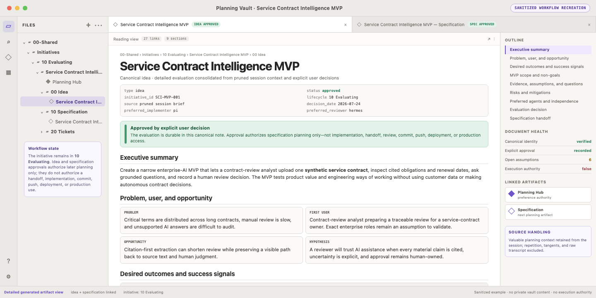

SoherAgent · 1 of 5 · Plan the idea
Scene 1 of 13 — Open the /plan source selector
Scene 2 of 13 — Prune the session, then draft
context/prune ✓ excluded: repetition · tangents · unrelated chat · raw transcript
Scene 3 of 13 — Load idea planning
Scene 4 of 13 — Explain, then clarify
ObservedThe brief defines outcomes but does not identify the first user.
RecommendationStart with a service-contract reviewer who can verify every citation.
Effect of your answerNarrows workflow and acceptance checks only; grants no approval or execution.
Scene 5 of 13 — Apply the clarification
Scene 6 of 13 — Explain, then name
ObservedThe brief and scope are clear, but the initiative has no durable identity.
RecommendationUse “Service Contract Intelligence MVP” to name both product intent and limited phase.
Effect of your choiceSets planning provenance only; it does not approve the idea or start work.
Scene 7 of 13 — Explain, then compare implementers
ObservedThe reviewed shared registry lists Pi and Hermes for implementation; it has no Claude or Codex agent entry.
RecommendationPrefer Pi for this local workflow, then recheck runtime and workspace access at handoff.
Effect of your choiceStores a sticky preference only; assignment, authorization, and dispatch remain separate.
Scene 8 of 13 — Select Hermes as reviewer
ObservedPi is preferred for implementation; selecting the same agent for review would weaken independence.
RecommendationSelect Hermes as the separate reviewer, subject to availability and access checks before review.
Effect of your choiceStores Hermes as a sticky preference only; it does not authorize or begin review.
Scene 9 of 13 — Assemble the recommendation
Scene 10 of 13 — Explain, then request authorization
ObservedA bounded capsule is ready; source-system, security, and legal details remain explicit discovery items.
RecommendationApprove only if this is enough for specification planning; otherwise re-evaluate with more questions.
Effect of your choiceApprove advances planning only. Re-evaluate loops. None of these options starts implementation.
Scene 11 of 13 — Record authority, then save
Scene 12 of 13 — Report the terminal result
Scene 13 of 13 — Open the generated idea in Obsidian
